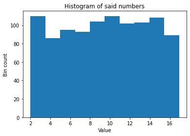
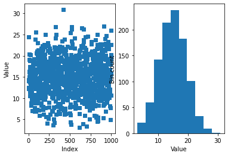

Trigonometry¶
import sympy as sym
import numpy as np
import matplotlib.pyplot as plt
from IPython.display import display,Math
1 Introduction to random numbers¶
# use the numpy module
np.random.rand(1)
array([0.05151186])
# make a plot of these numbers
nums = np.random.rand(1000)
plt.plot(nums,'s')
plt.title('Uniformly distributed random numbers')
plt.xlabel('Index')
plt.ylabel('Value')
plt.show()
plt.hist(nums)
plt.title('Histogram of said numbers')
plt.xlabel('Value')
plt.ylabel('Bin count')
plt.show()
# generating random numbers in a specific range
# parameters
minval = 2
maxval = 17
# random numbers in range [0 1]
randangs = np.random.rand(1000)
# modulate those numbers to parameters
randangs = randangs*(maxval-minval) + minval
plt.plot(randangs,'s')
plt.title('Uniformly distributed random numbers')
plt.xlabel('Index')
plt.ylabel('Value')
plt.show()
plt.hist(randangs)
plt.title('Histogram of said numbers')
plt.xlabel('Value')
plt.ylabel('Bin count')
plt.show()

# normally distributed random numbers
nums = np.random.randn(1000)
plt.subplot(211)
plt.plot(nums,'s',markersize=5,alpha=.3)
plt.title('Normally distributed random numbers')
plt.xlabel('Index')
plt.ylabel('Value')
plt.subplot(212)
plt.hist(nums)
plt.title('Histogram of said numbers')
plt.xlabel('Value')
plt.ylabel('Bin count')
plt.show()
1.1 Exercise¶
# generate normally distributed random numbers with a mean of 15 and a standard deviation of 4.3
desired_mean = 15
desired_std = 4.3
nums = desired_mean + desired_std*np.random.randn(1000)
plt.subplot(121)
plt.plot(nums,'s')
plt.xlabel('Index')
plt.ylabel('Value')
plt.subplot(122)
plt.hist(nums)
plt.xlabel('Value')
plt.ylabel('Bin count')
plt.show()
print('This distribution has a mean of %g and a standard deviation of %g' %(np.mean(nums),np.std(nums)))

This distribution has a mean of 14.9542 and a standard deviation of 4.4268
# to be more exact:
# generate normal random numbers
nums = np.random.randn(1000)
# enforce mean of 0
nums = nums - np.mean(nums)
# enforce std of 1
nums = nums/np.std(nums)
nums = nums*desired_std + desired_mean
plt.subplot(121)
plt.plot(nums,'s')
plt.xlabel('Index')
plt.ylabel('Value')
plt.subplot(122)
plt.hist(nums)
plt.xlabel('Value')
plt.ylabel('Bin count')
plt.show()
print('This distribution has a mean of %g and a standard deviation of %g' %(np.mean(nums),np.std(nums)))
This distribution has a mean of 15 and a standard deviation of 4.3
2 Exercise: Plotting random phase angles¶
angs = np.random.randn(100) # not this one!
angs = np.random.rand(100)*2*np.pi
for i in angs:
plt.plot([0,np.cos(i)],[0,np.sin(i)])
plt.axis('square')
plt.axis([-1,1,-1,1])
plt.axis('off')
plt.show()
3 Converting between radians and degrees¶
# the "manual" method, part 1: implement the formula!
# specify in degrees
deg = 180
# print the conversion (note that the algorithm is implemented in-line!)
print( "%g degrees is %g radians." %(deg,deg*np.pi/180) )
180 degrees is 3.14159 radians.
# the "manual" method, part 2: implement the formula!
# specify in radians
rad = np.pi
# print the conversion (note that the algorithm is implemented in-line!)
print( "%g radians is %g degrees." %(rad,180*rad/np.pi) )
3.14159 radians is 180 degrees.
# but the above implementations are not completely satisfactory, because angles are circular (e.g., 2pi = 0)
rad = np.pi*3
deg = (180*rad/np.pi)%360
print( "%g radians is %g degrees." %(rad,deg) )
9.42478 radians is 180 degrees.
# or use a Python function
deg = 180*4
np.deg2rad(deg)
12.566370614359172
# some silliness with embedding functions inside functions
np.rad2deg( np.deg2rad(180) )
180.0
3.1 Exercise¶
# make a function that asks for a number and unit, then converts and makes a plot
def angle_convert_plot():
# input from user
angle = eval(input('What angle to convert? ') )
unit = input('Which unit did you input (radian or degree)? ')
# do the conversion
if unit[0].lower()=='r':
rad = angle
deg = np.rad2deg(angle)
elif unit[0].lower()=='d':
deg = angle
rad = np.deg2rad(angle)
else:
raise ValueError('Unknown unit!')
# convert to <360
deg = deg%360
rad = rad%(2*np.pi)
# make the graph
plt.plot([0,np.cos(rad)],[0,np.sin(rad)],'r',linewidth=3)
plt.plot([0,1],[0,0],'r',linewidth=3)
plt.axis('square')
plt.axis([-1,1,-1,1])
plt.grid()
plt.title('Angle of %g$^o$, or %g rad.' %(deg,rad))
plt.show()
#angle_convert_plot()
4 The Pythagorean theorem¶
a = 8
b = 4
# compute c
c = np.sqrt(a**2 + b**2)
# draw the triangle
plt.plot([0,a],[0,0],'k',linewidth=2)
plt.plot([0,0],[0,b],'k')
plt.plot([0,a],[b,0],'k')
# plot right-angle
plt.plot([.3,.3],[0,.3],'k',linewidth=1)
plt.plot([0,.3],[.3,.3],'k',linewidth=1)
plt.text(a/3,.25,'a='+str(a),fontsize=15)
plt.text(.1,b/3,'b='+str(b),fontsize=15)
plt.text(a/2+.1,b/2,'c='+str(np.round(c,3)),fontsize=15)
axlim = np.max((a,b))+.5
plt.axis('square')
plt.axis([-.5,axlim,-.5,axlim])
plt.axis('off')
plt.show()
4.1 Exercise¶
# compute magnitude and angle of complex number
z = np.complex(3,4)
mag1 = np.sqrt( np.real(z)**2 + np.imag(z)**2 )
mag2 = np.abs(z)
print(mag1,mag2)
5.0 5.0
ang1 = np.arctan2(np.imag(z),np.real(z))
ang2 = np.angle(z)
print(ang1,ang2)
0.9272952180016122 0.9272952180016122
5 Graphing resolution for sine, cosine, and tangent¶
# specify the radians ("time")
x = np.linspace(0,6*np.pi,400)
plt.plot(x,np.sin(x),'r',label='$\sin(\\theta)$')
plt.plot(x,np.cos(x),'b',label='$\cos(\\theta)$')
plt.legend()
plt.xlabel('Radians ($\pi$)')
plt.ylabel('Function value')
plt.show()
# plot tangent
x = np.linspace(0,4*np.pi,100)
plt.plot(x,np.tan(x),'k',label='$\\tan(\\theta)$')
plt.legend()
plt.xlabel('Rad.')
plt.xticks(np.arange(x[0],x[-1],np.pi/2))
plt.ylabel('Function value')
plt.show()
# illustrate that tan = sin/cos
ang = np.random.rand(1)[0]*2*np.pi
tan = np.tan(ang)
sc = np.sin(ang) / np.cos(ang)
print( sc - tan )
0.0
# famous equality in trigonometry
ang = np.linspace(0,2*np.pi,10)
np.cos(ang)**2 + np.sin(ang)**2
array([1., 1., 1., 1., 1., 1., 1., 1., 1., 1.])
5.1 Exercise¶
x = np.linspace(-2*np.pi,2*np.pi,200)
y1 = np.sin(x + np.cos(x))
y2 = np.cos(x + np.sin(x))
plt.plot(x,y1,x,y2)
plt.legend(['$\sin(x+\cos(x))$','cos(x+sin(x))'])
plt.show()
th = sym.pi*7/6
theta = float(th)
x = np.linspace(0,theta%(2*np.pi),100)
# plot unit circle
plt.plot(np.cos(np.linspace(0,2*np.pi)),np.sin(np.linspace(0,2*np.pi)),color='gray')
plt.plot([-1.1,1.1],[0,0],'--',color=[.8,.8,.8])
plt.plot([0,0],[-1.1,1.1],'--',color=[.8,.8,.8])
# plot arc
plt.plot(np.cos(x),np.sin(x),'k',linewidth=3)
# plot vector to point
plt.plot([0,np.cos(theta)],[0,np.sin(theta)],'k:',linewidth=1)
plt.plot(np.cos(theta),np.sin(theta),'ko')
# plot cosine part
plt.plot([0,0],[0,np.sin(theta)],'r',linewidth=2,label='sin part')
plt.plot([np.cos(theta),0],[np.sin(theta),np.sin(theta)],'r:',linewidth=1)
plt.plot([np.cos(theta),0],[0,0],'g',linewidth=2,label='cos part')
plt.plot([np.cos(theta),np.cos(theta)],[0,np.sin(theta)],'g:',linewidth=1)
plt.title('$\\theta=%s$' %sym.latex(th))
plt.axis([-1.1,1.1,-1.1,1.1])
plt.gca().set_aspect('equal')
plt.legend()
plt.show()
6 Euler’s formula¶
# Euler's formula: me^ik = cos(k)+isin(k)
# create euler's number
k = np.pi/4
m = 2.3
cis = m*(np.cos(k) + 1j*np.sin(k))
eul = m*np.exp(1j*k)
print(cis)
print(eul)
(1.6263455967290592+1.626345596729059j)
(1.6263455967290592+1.626345596729059j)
# now extract magnitude and phase
mag = np.abs(eul)
ang = np.angle(eul)
# then plot
plt.polar([0,ang],[0,mag],'b',linewidth=3)
# plt.plot(k,m,'ro')
plt.xlabel('Cos axis'), plt.ylabel('Sin axis')
plt.title('me$^{i\phi}$, m=%g, $\phi=$%g' %(mag,ang))
plt.show()
6.1 Exercise¶
# write a function that will input a cosine/sine pair and output euler's formula with aa graph
def eulerFromCosSin():
re = 2 #eval(input('cosine part: '))
im = 3 # eval(input('sine part: '))
m = np.round(np.sqrt(re**2 + im**2), 2)
k = np.round(np.arctan2(im, re), 2)
plt.polar([0, k], [0, m], 'b', linewidth=3)
plt.title('me$^{i\phi}$, m=%g, $\phi=$%g' % (m, np.round(k, 2)))
plt.thetagrids([0, 45, 130, 215, 250])
plt.show()
eulerFromCosSin()
7 Exercise: Random exploding Euler¶
nvects = 200
ms = np.random.rand(nvects)
ps = np.random.rand(nvects)*2*np.pi
for i in range(0,nvects):
randnum = np.random.rand()
if randnum<.4:
color = [1,.2,.7]
elif randnum>.4 and randnum<.8:
color = [.7,.2,1]
else:
color = [0,1,0]
plt.polar([0,ps[i]],[0,ms[i]],color=color)
plt.axis('off')
plt.show()
8 Exercise: make random snakes with trigonometry!¶
angs = np.linspace(0,8*np.pi,1000)
cs = np.random.rand()
ss = np.random.rand()
x = np.cos(cs*angs)
y = np.sin(ss*angs)
# x = np.append(x,x[0])
# y = np.append(y,y[0])
plt.plot(x,y,'k')
plt.axis('square')
plt.axis([-1.1,1.1,-1.1,1.1])
plt.title('r$_1$ = %s, r$_2$ = %s' %(np.round(cs,2),np.round(ss,2)))
plt.axis('off')
plt.show()
9 Trigonometry BUG HUNT!¶
# plot a series of random numbers
s = np.random.randn(100,1)
plt.plot(s)
plt.show()
# create and image a matrix of random integers between (and including) 3 and 20
mat = np.random.randint(3,21,(30,20))
plt.imshow(mat)
plt.colorbar()
plt.show()
print(np.max(mat))
20
# create 100 random phase angles [0,2pi] and show unit vectors with those angles
n = 100
randphases = np.random.rand(n)*2*np.pi
for i in range(0,n):
plt.polar([0,randphases[i]],[0,1],'o-',color=np.random.rand(3),markersize=20,alpha=.3)
plt.show()
# create an outwards spiral using phase angles and amplitudes
n = 100
a = np.linspace(0,1,n)
p = np.linspace(0,4*np.pi,n)
plt.polar(p,a,'m',linewidth=3)
plt.axis('off')
plt.show()
# convert radians to degrees
n = 10
rad = np.logspace(np.log10(.001),np.log10(np.pi*2),n)
print(np.rad2deg(rad))
[5.72957795e-02 1.51405837e-01 4.00094520e-01 1.05726192e+00
2.79384671e+00 7.38282475e+00 1.95093385e+01 5.15540193e+01
1.36233061e+02 3.60000000e+02]
# famous equality in trigonometry
ang = np.logspace(np.log10(.001),np.log10(2*np.pi),10)
np.cos(ang)**2 + np.sin(ang)**2
array([1., 1., 1., 1., 1., 1., 1., 1., 1., 1.])
# create euler's number
p = np.pi/4
m = .5
eulr = m*np.exp(1j*p)
# now extract magnitude and phase
mag = np.abs(eulr)
ang = np.angle(eulr)
# then plot
plt.polar([0,ang],[0,mag],'b',linewidth=3)
plt.show()